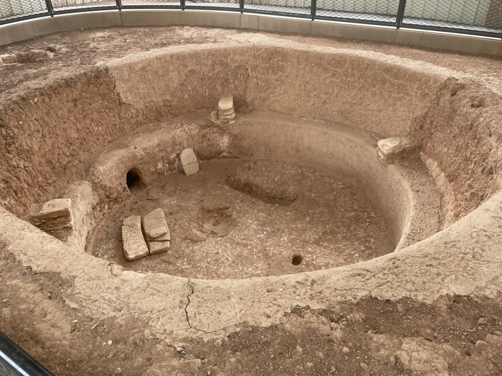

Chapter 1: Escaping the Pit of Desolation

Take stock of your supplies. What do you have?
A computer?
A bank account?
A vehicle?
We're going to turn these into some power.
But first, why should anyone desire power? Well, we probably should define what power
is. You can go to google to get a formal definition, but we will focus on the
practical applications of power here.
Power is the ability to wake up on a sunny morning, and decide to go to lay on the beach instead of going to the office
to work.
It is the ability to insult and demean people that you don't like and get away with it.
It is the ability to jail people that have a different opinion from you.
It is the ability to manipulate the markets to your advantage.
There are two types of people in the world. There are people to whom these applications are immediately repulsive,
and there are those who desire the opportunity to exert this kind of control
and influence over themselves and others. Unfortunately, if you do not take power into your own hands, it will fall into the hands
of the people who want you and your future generations subservient to their desires.
Right now, you're in a pit. You're surrounded by your own feces. You're not aware of this, but your senses have
been distorted by the accumulation of of your own waste. On top of that, some douchebag keeps coming and dumping a bunch of shit into your
hole. Every time he comes by, you wave and say hello because he's the only human contact you ever receive and you're desperate for some semblance of
affection.
Ideological minds fool themselves into believing that they do not desire any power of any kind, and sometimes that even leads to their
own accumulation of power, but power is a function of multiple variables and humility is not the only input for this function. In a modern constitutional republic, power is distributed
across the domain, mostly in small hills and valleys. Residing in the valleys, you may encounter drug addicts and homeless people.
Summiting the hills, you may find business owners and professors at universities.
In Colorado, there are mountains called 14ers. These are mountains whose peaks are higher than 14,000 feet in elevation. On these
peaks you may find lobbyists in Washington, investment bankers, members of Congress, and fortune 500 CEO's.
As you traverse across the landscape, you may wonder where your place is amongst the level curves.
I want to make the argument that you should make a deliberate ascent of the peaks.
It may seem obvious to some people, but those are not the people I am talking to.
I am talking to the people who have fooled themselves into believing that they deserve to suffer in the pits of desolation.
Why would you want to jail people who disagree with you? Why wouldn't you focus on ideas and skills when the accretion of power is a function
of your own resentment of it?
The truth is, the ideologues, and the people who are interested in ideas are the people who are stable amongst the
cliffs. The people who seek power out of resentment and hatred are genetically unfit to breathe in the altitude.
The cumulus of power is obtained by indirect, yet decisive methods.
So, climb out of the pit. It is only your own humility that prevents you from recognizing the reality that you are tall enough to reach the top and escape.
Your friends and family may try to stop you. They do this out of their own delusions. You may be forced to leave them behind.
You can only hope that you gain the strength and wisdom soon enough to save them from damnation.
Next up, Chapter 2: Assuming the Gradient